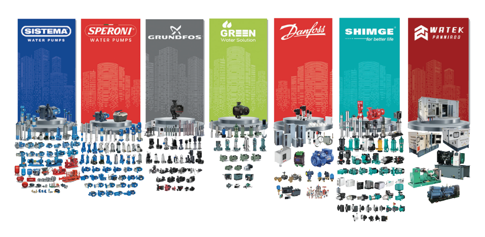

انتخاب پمپ آب ساختمان یک تصمیم کاملاً مهندسی است که مستقیماً بر کیفیت فشار آب، راندمان سیستم و عمر تجهیزات تأثیر میگذارد. انتخاب اشتباه پمپ میتواند منجر به افت فشار در طبقات بالا، نوسان جریان و افزایش استهلاک سیستم شود.
برای انتخاب صحیح پمپ، باید پارامترهای کلیدی مانند هد (Head) و دبی (Flow Rate) به همراه تعداد طبقات، تعداد واحدها و شرایط لولهکشی بررسی شوند.
معیارهای اصلی انتخاب پمپ آب
۱. هد (Head) چیست؟
هد یا ارتفاع پمپاژ، مقدار فشاری است که پمپ باید برای انتقال آب به ارتفاع مشخص تأمین کند. بهصورت تقریبی، هر ۱۰ متر ارتفاع معادل حدود ۱ بار فشار است.
هد کل شامل موارد زیر است:
- ارتفاع ساختمان
- افت فشار در لولهکشی
- فشار مورد نیاز مصرفکننده
۲. دبی (Flow Rate) چیست؟
دبی مقدار حجم آبی است که پمپ در واحد زمان تأمین میکند (لیتر بر دقیقه یا متر مکعب بر ساعت). دبی به عوامل زیر وابسته است:
- تعداد واحدها
- تعداد مصرفکنندههای همزمان
- نوع کاربری ساختمان (مسکونی، تجاری، اداری)
۳. رابطه هد و دبی در انتخاب پمپ
انتخاب پمپ باید بر اساس تعادل بین هد و دبی انجام شود. پمپی با هد بالا ولی دبی کم، یا برعکس، باعث عملکرد نامناسب سیستم خواهد شد.
برای انتخاب دقیق پمپ متناسب با پروژه خود، با کارشناسان ساویسمان مشورت کنید
تماس با ماانواع پمپها
در سیستمهای تأسیساتی و صنعتی، انواع مختلفی از پمپها بر اساس نوع کاربرد مورد استفاده قرار میگیرند:
- پمپ بشقابی
- پمپ جتی
- پمپ محیطی
- بوستر پمپ (چندمرحلهای و تکواحدی)
- پمپ سیرکولاسیون (گردش آب در سیستمهای بسته)
- پمپ کفکش (انتقال آب تمیز از منابع و مخازن)
- پمپ لجنکش (انتقال سیالات آلوده و دارای ذرات معلق)
اشتباهات رایج در انتخاب پمپ
- انتخاب پمپ فقط بر اساس اسب بخار
- نادیده گرفتن هد واقعی ساختمان
- عدم توجه به دبی مصرفی
- انتخاب بدون بررسی افت فشار
- استفاده نکردن از منبع تحت فشار
علائم انتخاب اشتباه پمپ
- نوسان فشار آب
- روشن و خاموش شدن مکرر پمپ
- صدای غیرعادی
- کاهش فشار در ساعات اوج مصرف
نکات نصب اصولی پمپ
- نصب در محیط دارای تهویه مناسب
- استفاده از لرزهگیر برای کاهش صدا
- نصب منبع تحت فشار
- استفاده از شیر یکطرفه
- تنظیم صحیح کلید اتوماتیک فشار
سوالات متداول
آیا فقط تعداد طبقات برای انتخاب پمپ کافی است؟
خیر، هد و دبی مهمترین معیارهای انتخاب هستند و باید در کنار تعداد طبقات بررسی شوند.
بوستر پمپ چه کاربردی دارد؟
برای ساختمانهای چند طبقه و مصرف همزمان بالا استفاده میشود و فشار پایدار در تمام طبقات تأمین میکند.
پمپ سیرکولاسیون برای چه استفاده میشود؟
برای گردش آب در سیستمهای بسته مثل گرمایش از کف و مدارهای موتورخانه.
پمپ کفکش و لجنکش چه تفاوتی دارند؟
کفکش برای آب تمیز و لجنکش برای سیالات آلوده و دارای ذرات معلق استفاده میشود. برای انتخاب نوع مناسب میتوانید با کارشناسان ساویسمان مشورت کنید.
جمعبندی
انتخاب پمپ آب ساختمان یک فرآیند کاملاً مهندسی است که باید بر اساس هد، دبی، تعداد طبقات و شرایط مصرف انجام شود. استفاده از پمپ مناسب باعث افزایش راندمان سیستم، کاهش مصرف انرژی و افزایش عمر تجهیزات خواهد شد. برای انتخاب دقیق و اصولی، مشاوره تخصصی پیش از خرید ضروری است.